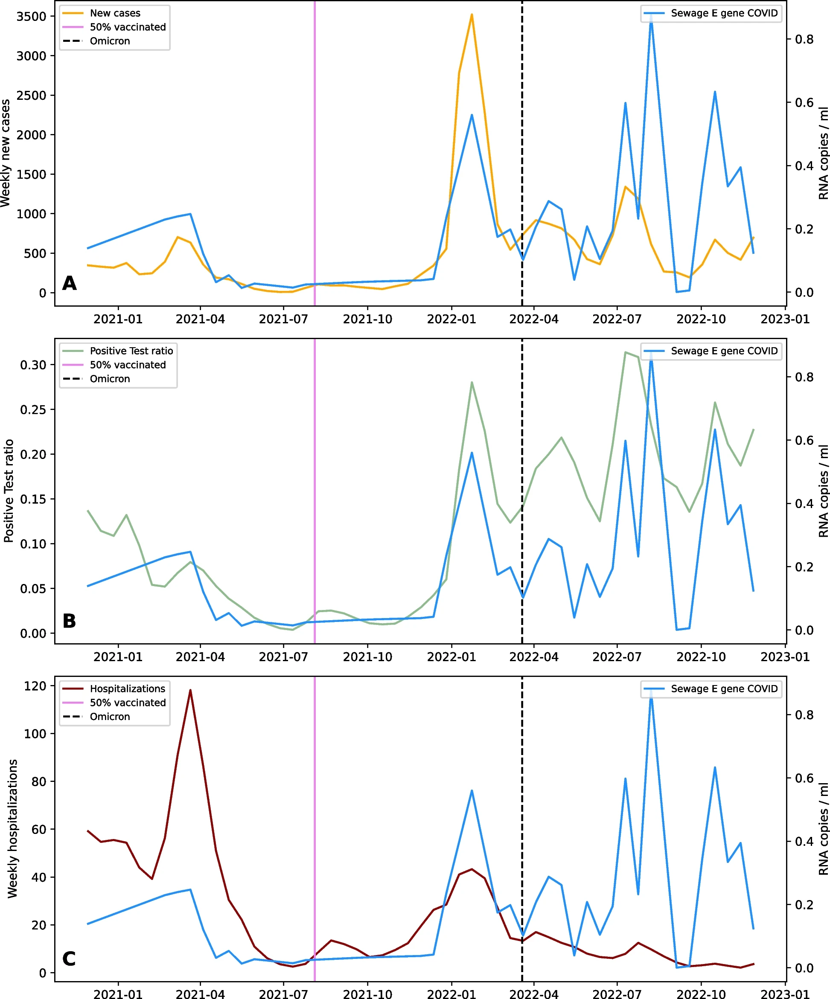

Bologna Integrated COVID-19 Sewage & Mobility Dataset
Durazzi et al. • University of Bologna & MODELS4COVID Study Group
This VEO-linked integrated dataset combines SARS-CoV-2 wastewater measurements, human mobility data, clinical hospitalisation records, vaccination dynamics, and viral genotyping from the metropolitan area of Bologna (2020–2022). The dataset supports interdisciplinary epidemic modelling by linking environmental surveillance with behavioural and clinical indicators. It enables analysis of how mobility patterns influence transmission dynamics and provides a real-world framework for understanding the interaction between social activity and epidemic spread. The underlying study demonstrates a strong relationship between human mobility and epidemiological parameters such as the reproduction rate, highlighting the added value of combining urban data streams with traditional surveillance systems.

Integrated modelling framework linking wastewater viral load, mobility patterns, and epidemiological indicators in Bologna (2020–2022).
© Durazzi et al. (2025)